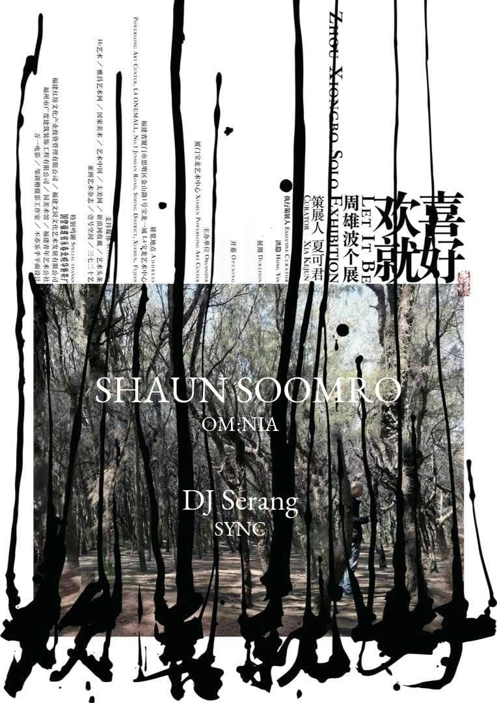

watch / Watch
Shaun Soomro, DJ Serang
RA lists a far-dated September Shanghai TBA entry for Shaun Soomro and DJ Serang. Keep it for complete RA coverage and as a future watch/context item until venue, ticket route, age policy, and current update state are confirmed.

DateSep 12
Time23:00-06:00
VenueTBA
DistrictShanghai
Soundclub, electronic, LMD-context
PriceCost not listed on RA
Age / IDNot listed
Source layertrusted-ra-watch
Intensitymedium
Credibilityunconfirmed
Event Tags
Simple tags for sound, room context, ticket/source status, and details that still need a source check.
How We Recommend This
- RecommendationIncluded for complete Resident Advisor Shanghai coverage; not promoted as a pick because venue, cost, ticket route, age rule, and current update state remain unresolved.
- Best forReaders tracking long-tail RA/LMD Shanghai listings and Shaun Soomro appearances, not readers planning a confirmed near-term night out.
- Verify before goingReopen RA closer to September 12 and look for an updated venue, ticket route, age policy, promoter note, and any lineup or cancellation changes before planning around it.
- Source confidenceRA confirms the title, September 12 date, 23:00-06:00 time, Shanghai/TBA venue label, LMD promoter, lineup, interested count, and last-updated state; it does not confirm venue address, price, age, or ticket route.
Lineup and Notes
- Shaun SoomroRA lists Shaun Soomro on the September 12 Shanghai lineup and links his artist profile; exact set time was not published.
- DJ SerangRA lists DJ Serang on the September 12 Shanghai lineup; no separate artist profile was captured in this pass.
Source Trail
- Resident Advisor trusted-ra-watch / checked 2026-06-14
This lead is intentionally noindexed until a direct venue, promoter, ticketing, RA, SmartShanghai detail, or official artist source confirms the details.
Trust Ledger
- Last checked2026-06-14
- Selection basisWatchlist lead kept visible for source monitoring; do not treat date, lineup, or ticketing as final until stronger evidence lands.
- Commercial relationshipNo paid placement recorded.
- Correction routeSend source fixes through RED 980793145 or the corrections policy.
- PolicyHow We Recommend / Corrections